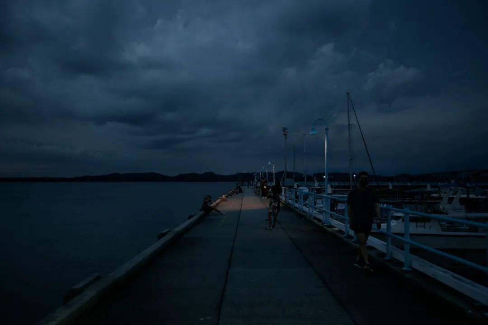
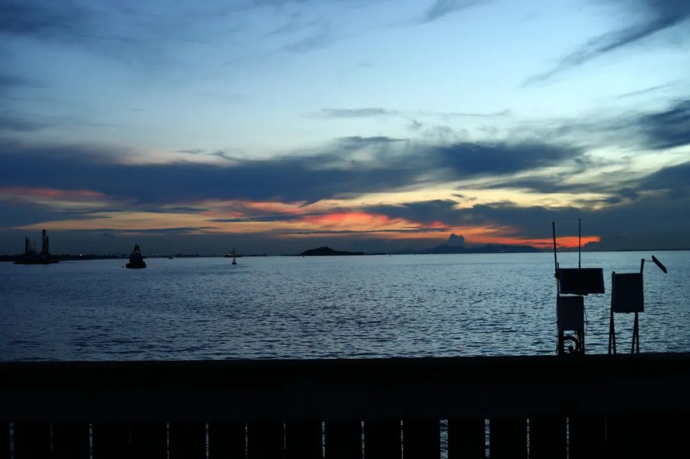
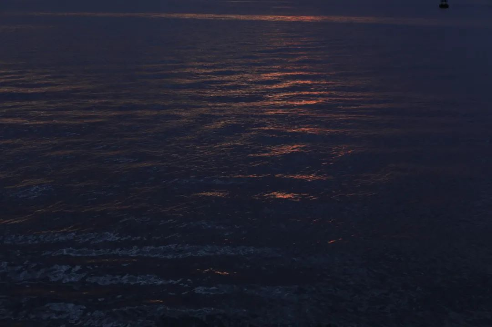
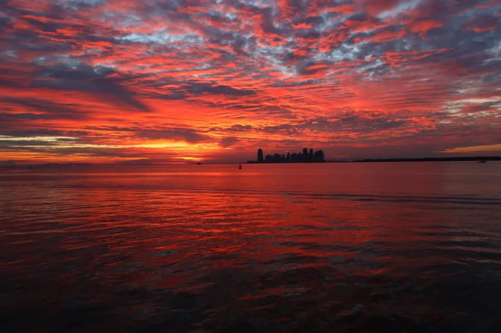

本文是张衔瑜第173篇推文
共计1018个字
这几天的生活状态用一个词来形容：
度日如梦
再忙也不要忘记剪指甲，
毕竟袜子不是说买就买的
下午三点多的时候，觉得今天实在是学不下去了。洗澡。觉得应该去海边，于是就去了坡县的最西边。朋友的安利里，出地铁站就是灯塔。我想去更南边海面更大一些的地方。
被保安/包工头礼貌地请出来了。可能这边是坡县为数不多会出现很多沙尘的地方。回到大士连。
我看到很多帆船停在港口，出海到对岸就是马来西亚。距离短得我如果去复健一个月游泳，就能轻松游到对岸。
想安稳一点，尤其是不太安定的时候。今天没有弄坏东西。表扬。
第一天去海边的时候，没有出图也没有发图。回来九点，洗完澡之后，微波炉煮了一碗前很久很久买的鹿儿岛二人食拉面。还有一包长崎一包熊本。
把洗好的衣服收上来，晾好。碗洗了。一会儿去刷牙，睡觉。

那一天我来了很多次西边，把夕阳看了一遍又一遍。
那一天变成了很多天，因为期待在海边能等到答案的问题，去之前我就知道，事情在海边是不会有结果的。所有的问题是因为我们付出了努力，或者经历了确切的时期，才知道这个问题有了答案。海是给不了答案的，庙宇、教堂、禅院这些地方也给不了。
我想到了好几次一定要在推文里写的内容，但是没有在memo里，我也不记得是什么
宗教是怎么回事呢？复旦王德峰说，这是一种贿赂，一种行贿。你在去庙宇、教堂、禅院的时候，根本不会觉得自己是一位教徒在做礼拜，而是在这里待着，当一位普通的行贿人，请求更强力者施舍好处。
如果神佛只度进贡者，那有什么资格当得神佛的地位。如果神佛普度众生，那又何必去礼拜。这是张衔瑜建号所写的日期上前十篇里的内容。



今天傍晚，看到了最近去海边的第四个黄昏。海和其他的这些外力，能做到让人平静一些、安定一点，已经是出人意料的、算是意外之喜了。无数渺小的思考，填满了庸俗人类的一生。只有去解决问题，问题才能被解决。
晚间的港湾放着不知名的舞曲，听起来像音乐剧《西贡小姐》的类似选段。一个半小时里，天边已经变换了好几种颜色。堤岸上海钓的人们祈祷渔具给出期盼中的信号，我把三脚架往地上一方，在岸边脚悬空着和海浪的声音作同频踢踏。
我不期待担心的事情有一个确切的结果。因为很有可能的未来里，这可能会像那些跟人已久的习惯一样，比如遣词造句和用点测光，和这些习惯一样一直存在着。人们要等到什么时候才会知道自己真的要做什么呢？可能要到知天命的时候。知天命也不一定就真的知，可能只是和一种生活妥协成了自然，成为了深渊。
Fishing the sunset.